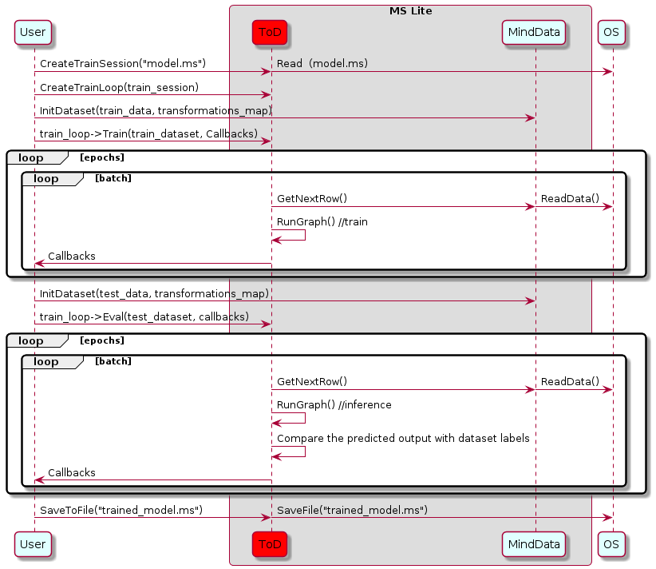

Using Runtime for Model Training (C++)
Linux Android C++ Model Training Model Loading Data Preparation Intermediate Expert

Overview
The principal procedures of lite training is as follows:
Design the network and export the
MindIRmodel file by using the cloud side APIs.Transfer the
MindIRfile to .ms model file.Train, evaluate and save
msmodel files.
The model structure is saved in the transferred
msmodel file which will be load to the device platform for training.
A sequence diagram explaining the train sequence is shown in the image below:

In this diagram the drawn objects represents:
OS: The operator system of user.User: The operations of the user.MindData: Load data from the storage and perform pre-processing (e.g., reading an image, rescaling it to a given size and converting it to bitmap) during the model training.ToD: The training mechanism of MindSpore Lite.MS Lite: A software module provided by MindSpore Lite, that provides flatbuffer DeSerialization into a network of nodes and interconnecting tensors. It performs graph compilation and calls the graph executor for train and inference.CreateTrainSession: Create the object of the classTrainSession.CreateTrainLoop: Create the object of the classTrainLoop.InitDataset: The user self-defined functions which can load and process dataset.train_loop: The object of the classTrainLoop.Train: The member function of the classTrainLoop, which receives the vector of off-the-shelf or user self-defined callbacks objects.Callbacks: Execute the off-the-shelf or user self-defined callback functions.
Session Creation
TrainSession is the main entrance of the MindSpore Lite framework. We can compile and execute graph models through TrainSession class.
Reading Models
A Model file is flatbuffer-serialized file which was converted using the MindSpore Model Converter Tool. These files have a .ms extension. Before model training and/or inference, the model needs to be loaded from the file system and parsed. Related operations are mainly implemented in the TrainModel class which holds the model data such as the network structure, tensors sizes, weights data and operators attributes.
In MindSpore Lite the user is not allowed to access the training model object, since it is being used by
TrainSessionduring training. All interactions with training model object including instantiation, compilation and deletion are handled withinTrainSession.
Creating Contexts
Context is a MindSpore Lite Object which contains basic configuration parameters required by the sessions to guide graph compilation and execution. It allows to define the device to run the model, e.g., CPU or GPU, the number of threads used for training and inference and the memory allocation scheme.
Currently, only single threaded CPU device is supported by TrainSession.
Once the TrainSession is created with the Context object, it is no longer needed and can be deleted.
Creating Sessions
There are two methods to create a session:
The first API allows MindSpore Lite to access the filesystem and read the model from a file, parse it, compile it and produce a valid TrainSession object. The
Contextdescribed above is passed to the TrainSession as a basic configuration. The static function has the following signatureTrainSession *TrainSession::CreateSession(const string& filename, const Context *context, bool mode), wherefilenameis the model’s file name, context is theContextand mode is the initial training mode of the session (Train/Eval). On Success, a fully compiled and ready to useTrainSessioninstance is returned by the function, this instance must be freed usingdeleteon the termination of the process.The second API is similar to the first but uses an in-memory copy of the flatbuffer in order to create the
TrainSession. The static function has the following signatureTrainSession *TrainSession::CreateSession(const char* model_buf, size_t size, const Context *context, bool train_mode = false), wheremodel_bufis a pointer to the in-memory buffer andsizeis its length. On Success, a fully compiled and ready-to-useTrainSessioninstance is returned by the function. If needed, the buf pointer can be freed immediately. The returnedTrainSessioninstance must be freed usingdeletewhen no longer needed.
Creating TrainLoop
User can create the object of the class TrainLoop by using the function CreateTrainLoop to call MindData APIs. We recommend the function CreateTrainLoop. The member function CreateTrainLoop of the class TrainLoop whose prototype is as follows:
TrainLoop *CreateTrainLoop(session::TrainSession *train_session, lite::Context *context, int batch_size = -1)
The following codes show ho to create a training session based on the multi-threads CPU by using the class TrainLoop.
#include "include/train_session.h"
#include "include/context.h"
int CreateSession() {
mindspore::lite::Context context;
context.device_list_[0].device_info_.cpu_device_info_.cpu_bind_mode_ = mindspore::lite::NO_BIND;
context.device_list_[0].device_info_.cpu_device_info_.enable_float16_ = false;
context.device_list_[0].device_type_ = mindspore::lite::DT_CPU;
context.thread_num_ = 2;
// Create Session
session_ = mindspore::session::TrainSession::CreateSession(ms_file_, &context);
MS_ASSERT(nullptr != session_);
loop_ = mindspore::session::TrainLoop::CreateTrainLoop(session_, &context);
acc_metrics_ = std::shared_ptr<AccuracyMetrics>(new AccuracyMetrics);
loop_->Init({acc_metrics_.get()});
return 0;
}
Refer Train a LeNet for more details.
Data Processing
Data Reading Pipeline
The class Dataset and its extension class (e.g., MnistDataset and AlbumDataset) have provided abundant data procssing API. Users only need to specify the dataset path and set the data processing operations for the model training by using the shared pointers from the related API. Reading pipeline will decode and load dataset during model training. Refer Dataset for more detials.
Data Preprocessing Pipeline
The class TensorTransform has provided abundant data preprocssing API and has the same function as the cloud side, (e.g., Dimension reshaping, data type casting and one-hot coding). The users only need to create the objects of the extension classes of TensorTransform and transfer them to the function Map. Refer Vision for more detials.
Example
The following codes show how to read and process dataset by using the class Dataset and TensorTransform:
#include "include/datasets.h"
#include "include/context.h"
int DataSetPipeline() {
train_ds_ = Mnist(data_dir_ + "/train", "all");
TypeCast typecast_f("float32");
Resize resize({h_, w_});
train_ds_ = train_ds_->Map({&resize, &typecast_f}, {"image"});
TypeCast typecast("int32");
train_ds_ = train_ds_->Map({&typecast}, {"label"});
train_ds_ = train_ds_->Shuffle(2);
train_ds_ = train_ds_->Batch(batch_size_, true);
if (verbose_) {
std::cout << "DatasetSize is " << train_ds_->GetDatasetSize() << std::endl;
}
if (train_ds_->GetDatasetSize() == 0) {
std::cout << "No relevant data was found in " << data_dir_ << std::endl;
MS_ASSERT(train_ds_->GetDatasetSize() != 0);
}
return 0;
}
Execute Training
MindSpore has provided some off-the-shelf callback classes for users (e.g., accuracy_metrics, accuracy_monitor, ckpt_saver, classification_train_accuracy, loss_monitor and metrics). The function Train and Eval of the class TrainLoop can set the model to the training or evaluation mode separately, specify the methods of the data processing and monitor the session status.
Training
Create the objects of the off-the-shelf functions and call the Train function of the class TrainLoop to training:
int Train() {
struct mindspore::lite::StepLRLambda step_lr_lambda(1, 0.8);
mindspore::lite::LRScheduler step_lr_sched(mindspore::lite::StepLRLambda, static_cast<void *>(&step_lr_lambda), 1);
mindspore::lite::LossMonitor lm(100);
mindspore::lite::ClassificationTrainAccuracyMonitor am(1);
mindspore::lite::CkptSaver cs(1000, std::string("lenet"));
Rescaler rescale(255.0);
loop_->Train(epochs_, train_ds_.get(), std::vector<TrainLoopCallBack *>{&rescale, &lm, &cs, &am, &step_lr_sched});
return 0;
}
Evaluating
Also call the Eval function of the class TrainLoop to evaluate model.
float Eval() {
test_ds_ = Mnist(data_dir_ + "/test", "all");
TypeCast typecast_f("float32");
Resize resize({h_, w_});
test_ds_ = test_ds_->Map({&resize, &typecast_f}, {"image"});
TypeCast typecast("int32");
test_ds_ = test_ds_->Map({&typecast}, {"label"});
test_ds_ = test_ds_->Batch(batch_size_, true);
Rescaler rescale(255.0);
loop_->Eval(test_ds_.get(), std::vector<TrainLoopCallBack *>{&rescale});
std::cout << "Eval Accuracy is " << acc_metrics_->Eval() << std::endl;
return 0.0;
}
With TrainSessions, a network can be used for both inference and training. These two modes differ in several aspects:
The input of the network: Running inference requires only the data, while running training requires both data and labels.
The output of the network: Running inference returns the predicted values in the output, while running in training mode returns the loss.
In training mode, the weights of the layers are updated in each Run, while in inference mode they are static.
Some layers behave differently in inference vs. training mode, e.g., updating the accumulated batch mean and variance in Batch Normalization layers.
Others
Session Mode Switching
The functions Train and Eval in the class TrainSession are called by the functions Train and Eval in the class TrainLoop . User can switch session mode by calling the two functions directly, the prototypes are as follows:
/// \brief Set model to train mode
/// \return STATUS as an error code of compiling graph, STATUS is defined in errorcode.h
virtual int Train() = 0;
/// \brief Set model to eval mode
/// \return STATUS as an error code of compiling graph, STATUS is defined in errorcode.h
virtual int Eval() = 0;
The following sample code shows how to set a TrainSession object to train mode.
// Assuming session is a valid instance of TrainSession
auto ret = session->Train();
if (ret != RET_OK) {
std::cerr << "Could not set session to train mode" << std::endl;
return -1;
}
auto ret = session->Eval();
if (ret != RET_OK) {
std::cerr << "Could not set session to eval mode" << std::endl;
return -1;
}
Obtaining Input Tensors
Before graph execution, whether it is during training or inference, the input data must be filled-in into the model input tensors. MindSpore Lite provides the following methods to obtain model input tensors:
Use the
GetInputsByTensorNamemethod to obtain model input tensors that are connected to the model input node based on the tensor name./// \brief Get MindSpore input Tensors of model by the tensor name. /// /// \param[in] tensor_name Define tensor name. /// /// \return MindSpore Lite MSTensor. virtual mindspore::tensor::MSTensor *GetInputsByTensorName(const std::string &tensor_name) const = 0;
Use the
GetInputsmethod to directly obtain the vectors of all model input tensors./// \brief Get input MindSpore Lite MSTensors of model. /// /// \return The vector of MindSpore Lite MSTensor. virtual std::vector<tensor::MSTensor *> GetInputs() const = 0;
If the model requires more than one input tensor (this is certainly the case during training, where both data and labels serve as inputs of the network) it is the user’s responsibility to know the inputs order or their tensorName. This can be obtained from the Python model. Alternatively, one can deduce this information from the sizes of the input tensors.
Copying Data
After model input tensors are obtained, the data must be copied into the tensors. The following methods allows to access the size of the data, it’s shape, the number of elements, the data type and the writable pointer. See also detailed description in the MSTensor API documentation.
/// \brief Get byte size of data in MSTensor. /// /// \return Byte size of data in MSTensor. virtual size_t Size() const = 0; /// \brief Get shape of the MindSpore Lite MSTensor. /// /// \return A vector of int as the shape of the MindSpore Lite MSTensor. virtual std::vector<int> shape() const = 0; /// \brief Get number of element in MSTensor. /// /// \return Number of element in MSTensor. virtual int ElementsNum() const = 0; /// \brief Get data type of the MindSpore Lite MSTensor. /// /// \note TypeId is defined in mindspore/mindspore/core/ir/dtype/type_id.h. Only number types in TypeId enum are /// suitable for MSTensor. /// /// \return MindSpore Lite TypeId of the MindSpore Lite MSTensor. virtual TypeId data_type() const = 0; /// \brief Get the pointer of data in MSTensor. /// /// \note The data pointer can be used to both write and read data in MSTensor. /// /// \return The pointer points to data in MSTensor. virtual void *MutableData() const = 0;
Example
The following sample code shows how to obtain the entire graph input
MSTensorfromLiteSessionand enter the model input data toMSTensor.// Assuming session is a valid instance of TrainSession auto inputs = session->GetInputs(); // Assuming the model has two input tensors, the first is for data and the second for labels int data_index = 0; int label_index = 1; if (inputs.size() != 2) { std::cerr << "Unexpected amount of input tensors. Expected 2, model requires " << inputs.size() << std::endl; return -1; } // Assuming batch_size and data_size variables holds the Batch size and the size of a single data tensor, respectively: // And assuming sparse labels are used if ((inputs.at(data_index)->Size() != batch_size*data_size) || (inputs.at(label_index)->ElementsNum() != batch_size)) { std::cerr << "Input data size does not match model input" << std::endl; return -1; } // Assuming data_ptr is the pointer to a batch of data tensors // and iassuming label_ptr is a pointer to a batch of label indices (obtained by the DataLoder) auto *in_data = inputs.at(data_index)->MutableData(); auto *in_labels = inputs.at(label_index)->MutableData(); if ((in_data == nullptr)|| (in_labels == nullptr)) { std::cerr << "Model's input tensor is nullptr" << std::endl; return -1; } memcpy(in_data, data_ptr, inputs.at(data_index)->Size()); memcpy(in_labels, label_ptr, inputs.at(label_index)->Size()); // After filling the input tensors the data_ptr and label_ptr may be freed // The input tensors themselves are managed by MindSpore Lite and users are not allowed to access them or delete them
Note:
The data layout in the model input tensors of MindSpore Lite must be NHWC (bathc size, height, weight and channel).
The Tensors returned by
GetInputsandGetInputsByTensorNamemethods shuold not be released by users.
Obtaining Output Tensors
After each execution of the graph, the user might want to read the model’s outputs, whether it is the loss in the case of training mode, or the predicted output in the case of evaluation mode.
MindSpore Lite provides the following methods to obtain the model’s output MSTensor.
Use the
GetOutputsByNodeNamemethod to obtain the output tensors that belong to a certain node:/// \brief Get output MindSpore Lite MSTensors of model by node name. /// /// \param[in] node_name Define node name. /// /// \return The vector of MindSpore Lite MSTensor. virtual std::vector<tensor::MSTensor *> GetOutputsByNodeName(const std::string &node_name) const = 0;
The following sample code shows how to obtain the output
MSTensorfromLiteSessionusing theGetOutputsByNodeNamemethod.// Assume that session is a vlaid TrainSession instance // Assume that model has a output node named output_node_name_0. auto output_vec = session->GetOutputsByNodeName("output_node_name_0"); // Assume that output node named output_node_name_0 has only one output tensor. auto out_tensor = output_vec.front(); if (out_tensor == nullptr) { std::cerr << "Output tensor is nullptr" << std::endl; return -1; }
Use the
GetOutputByTensorNamemethod to obtain an output tensor, based on the tensor name./// \brief Get output MindSpore Lite MSTensors of model by tensor name. /// /// \param[in] tensor_name Define tensor name. /// /// \return Pointer of MindSpore Lite MSTensor. virtual mindspore::tensor::MSTensor *GetOutputByTensorName(const std::string &tensor_name) const = 0;
The following sample code shows how to obtain the output
MSTensorfromLiteSessionusing theGetOutputByTensorNamemethod.// Assume that session is a vlaid TrainSession instance // We can use GetOutputTensorNames method to get the names of all the output tensors of the model auto tensor_names = session->GetOutputTensorNames(); // Use output tensor name returned by GetOutputTensorNames as key for (auto tensor_name : tensor_names) { auto out_tensor = session->GetOutputByTensorName(tensor_name); if (out_tensor == nullptr) { std::cerr << "Output tensor is nullptr" << std::endl; return -1; } }
Use the
GetOutputsmethod to obtain all the output tensors, ordered by their tensor name:/// \brief Get output MindSpore Lite MSTensors of model mapped by the tensor name. /// /// \return The map of output tensor name and MindSpore Lite MSTensor. virtual std::unordered_map<std::string, mindspore::tensor::MSTensor *> GetOutputs() const = 0;
After model output tensors are obtained, you need to enter data into the tensors. Use the
Sizemethod ofMSTensorto obtain the size of the data to be entered into tensors, use thedata_typemethod to obtain the data type ofMSTensor, and use theMutableDatamethod ofMSTensorto obtain the writable pointer./// \brief Get byte size of data in MSTensor. /// /// \return Byte size of data in MSTensor. virtual size_t Size() const = 0; /// \brief Get data type of the MindSpore Lite MSTensor. /// /// \note TypeId is defined in mindspore/mindspore/core/ir/dtype/type_id.h. Only number types in TypeId enum are /// suitable for MSTensor. /// /// \return MindSpore Lite TypeId of the MindSpore Lite MSTensor. virtual TypeId data_type() const = 0; /// \brief Get the pointer of data in MSTensor. /// /// \note The data pointer can be used to both write and read data in MSTensor. /// /// \return The pointer points to data in MSTensor. virtual void *MutableData() const = 0;
The following sample code shows how to obtain the output
MSTensorfromLiteSessionusing theGetOutputsmethod and print the first ten data or all data records of each outputMSTensor.// Assume that session is a vlaid TrainSession object auto output_map = session->GetOutputs(); // Assume that the model has only one output node. auto out_node_iter = output_map.begin(); std::string name = out_node_iter->first; // Assume that the unique output node has only one output tensor. auto out_tensor = out_node_iter->second; if (out_tensor == nullptr) { std::cerr << "Output tensor is nullptr" << std::endl; return -1; } // Assume that the data format of output data is float 32. if (out_tensor->data_type() != mindspore::TypeId::kNumberTypeFloat32) { std::cerr << "Output of lenet should in float32" << std::endl; return -1; } auto *out_data = reinterpret_cast<float *>(out_tensor->MutableData()); if (out_data == nullptr) { std::cerr << "Data of out_tensor is nullptr" << std::endl; return -1; } // Print the first 10 float data or all output data of the output tensor. std::cout << "Output data: "; for (size_t i = 0; i < 10 && i < out_tensor->ElementsNum(); i++) { std::cout << " " << out_data[i]; } std::cout << std::endl; // The elements in outputs do not need to be free by users, because outputs are managed by the MindSpore Lite.
Note that the vectors or map returned by the GetOutputsByNodeName, GetOutputByTensorName and GetOutputs methods do not need to be released by users.
Execute Training or Evaluating
Execute Session
Whether a TrainSession object is in the training mode or in eval mode, the way to make it execute, i.e., to run the data through the graph, is to call the RunGraph method.
/// \brief Run session with callbacks.
///
/// \param[in] before Define a call_back_function to be called before running each node.
/// \param[in] after Define a call_back_function called after running each node.
///
/// \note RunGraph should be called after CompileGraph.
///
/// \return STATUS as an error code of running graph, STATUS is defined in errorcode.h.
virtual int RunGraph(const KernelCallBack &before = nullptr, const KernelCallBack &after = nullptr) = 0;
Prior to run each graph, the user must make sure that the data is properly loaded to the input tensors.
Execute Callback
MindSpore Lite framework allows the user to set two callback functions that will be called before and after running each node. Such functions can assist the developer in tracing the network, debugging it and measuring how long it took run each node. The callback parameters are as follows:
The current input tensors of the running node
The current output tensors of the running node
Name and type of the running node
While the node name and type will be the same before and after running the node, the output tensors will differ between the two callbacks invocations. For some operators, also the input tesnors will vary.
/// \brief CallBackParam defines input arguments for callback function.
struct CallBackParam {
std::string node_name; /**< node name argument */
std::string node_type; /**< node type argument */
};
/// \brief KernelCallBack defined the function pointer for callBack.
using KernelCallBack = std::function<bool(std::vector<tensor::MSTensor *> inputs, std::vector<tensor::MSTensor *> outputs, const CallBackParam &opInfo)>;
The following sample code demonstrates how to define two callback functions, the first will be called before running each layer, and the second after running it.
// Assuming session is a valid instance of TrainSession and that data was assigned to the input tensors
// Definition of a callback function that will be called before forwarding operator
bool before_callback(const std::vector<mindspore::tensor::MSTensor *> &inputs, const std::vector<mindspore::tensor::MSTensor *> &outputs,
const mindspore::CallBackParam &call_param) {
std::cout << call_param.node_name << std::endl;
std::cout << "Before forwarding: input size is " << inputs.size() << std::endl;
return true;
};
// Definition of callback function that will be called after forwarding operator
bool after_callback(const std::vector<mindspore::tensor::MSTensor *> &inputs, const std::vector<mindspore::tensor::MSTensor *> &outputs,
const mindspore::CallBackParam &call_param) {
std::cout << "After forwarding: output size is " << outputs.size() << std::endl;
return true;
};
// Hand over the callback functions to RunGraph when performing the training or inference
ret = session_->RunGraph(before_callback, after_callback);
if (ret != RET_OK) {
MS_LOG(ERROR) << "Run graph failed.";
return RET_ERROR;
}
Saving Model
The function CkptSaver calls the function SaveToFile actually. The user can also call SaveToFile directly to save the trained model.
/// \brief Save the trained model into a flatbuffer file
///
/// \param[in] filename Filename to save flatbuffer to
///
/// \return 0 on success or -1 in case of error
virtual int SaveToFile(const std::string &filename) const = 0;
You can load the saved model to do re-training or inference.
Please use benchmark_train to measure the performance and accuarcy of the trained models.